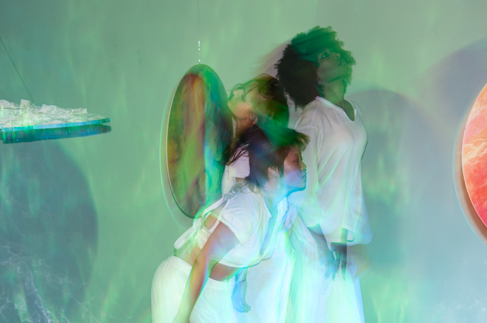
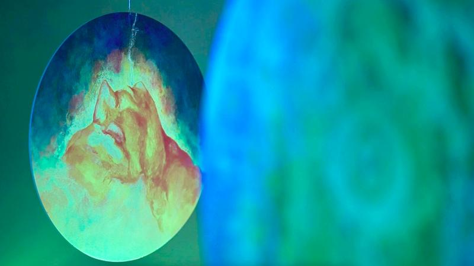
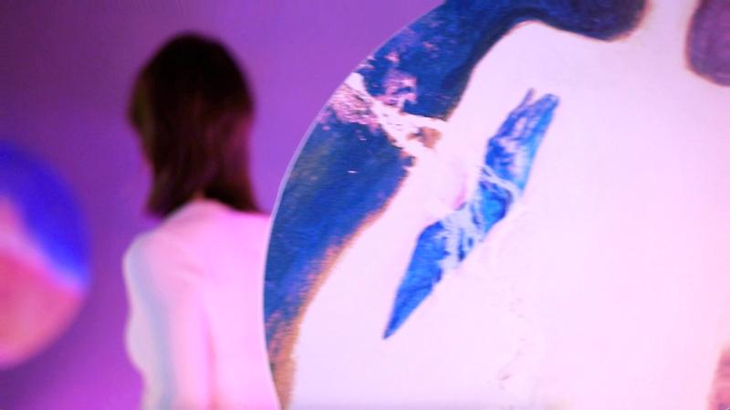
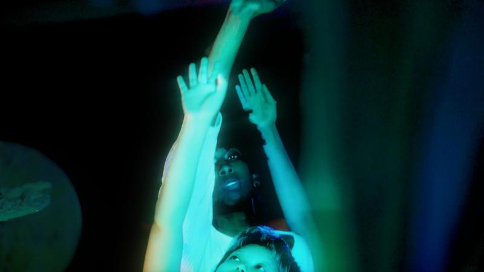

The Interconnections 是一场唤起冥想精神本质的互动体验。MAXgallery 与艺术家 Frey (Hongyao) Su、策展人 Minglu Zhong 很荣幸呈现这场展览。

展览呈现艺术家 Frey Su 经由多媒体装置进行的跨学科表达，融合传统绘画、雕塑、灯光与声音。通过容纳六件作品，展览将拓展房间的边界，将其转化为一场沉浸式冥想。这些作品共同代表了五种微观感知及其与精神提升、觉知的关系，在宏观层面命名个体的"精、气、神"。作品以类似轨道的布局排列，漂浮在不断变化、无垠的光之中，包裹着一个从中央空间延伸至天空的、普遍的、无边界的内核。
在流动的引导下，访客将成为艺术作品的一部分——可以躺在地上或自由探索，从一个超越自身的视角体验身体与精神的近乎全能、自然的协同。反射表面映照出极光、你与我，扩展为一个充盈着超越与冥想动态的隐秘领域。



The Interconnections 包含由 MICA 艺术社区与 JHU Peabody 音乐家、舞者共同开发的协作项目，以特别活动充实展览。这些活动面向家庭友好，提供新鲜的艺术体验与互动元素，为人们提供缓解压力、促进健康的喘息空间。它们邀请每个人停下来、呼吸，与当下重新连接。这些元素共同创造沉浸、静谧的冥想空间，引导参与者踏上内省之旅，鼓励亲密的人际冥想体验。
展览信息
展期2024 年 10 月 5 日 — 11 月 1 日
开幕2024 年 10 月 10 日（周六）4–7 pm
地点MAXgallery, 126 North Madiera Street, Baltimore
艺术家Frey (Hongyao) Su
策展人Minglu Zhong